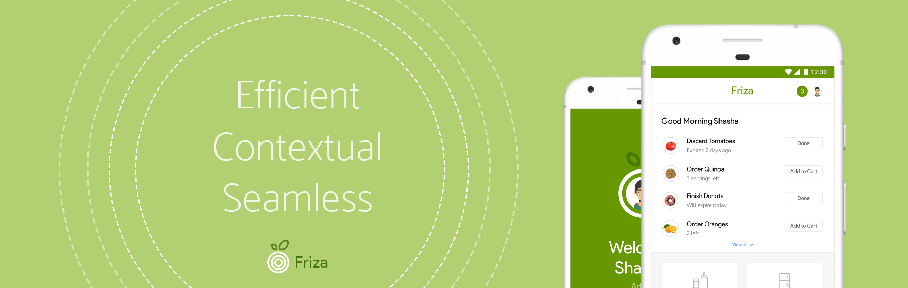
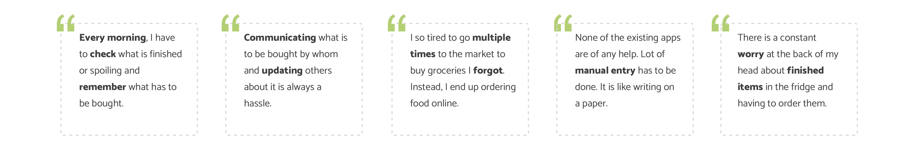
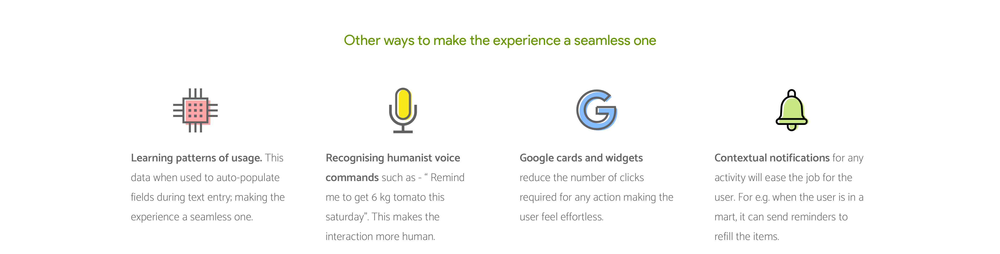
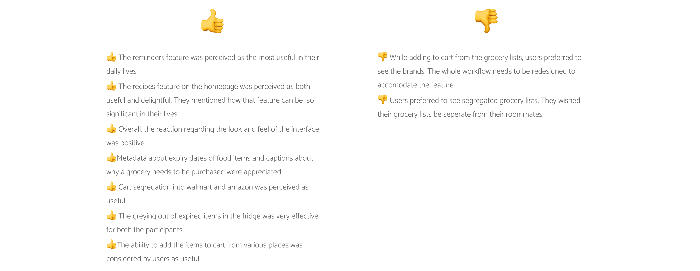
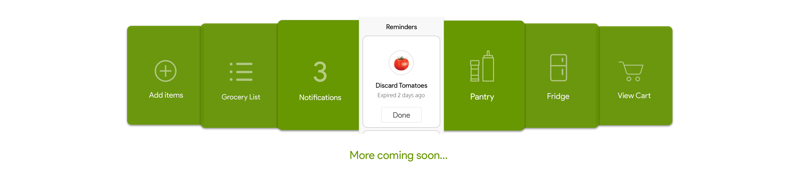

Room Reservation System.
A campus reservation system helping students book rooms on campus
Add description
Duration: 48 hours

The problem
When multiple people share the same fridge like in a bachelor's flat, it is not easy to keep track of the items or their quantity. In nuclear families, the husband has to check with his wife to know what to buy. It is also necessary for users to keep checking if any of the items is going stale or getting expired.
Existing Solutions
Mobile applications and Smart fridges/Hubs are the two popular technologies which enable tracking of food items inside the fridge. I explored and analysed the highest rated fridge tracking applications on Playstore and Appstore.
Smart fridges and smart hubs are gaining popularity these days. The smart fridge essentially has interior cameras and a touchscreen on its door to display essential information. The touchscreen often is the family hub that helps users to manage several other smart devices in the house and daily tasks.
Knowing the User
In order to understand the user's current lifestyles, hacks around managing grocery, needs and frustrations, I conducted semi-structured interviews with potential users. I found that The verbatims below highlight the major needs and painpoints.
Solution
Friza is a mobile app that syncs with the smart fridge/hub to help the user remotely track contents of the fridge, monitor usage and seamlessly manage grocery lists.
Several people in the house can create profiles and get access to all information. However, the admin has control over the settings. This is to ensure that children in the family has limited access to the settings. The 5 main features of the app are divided into 5 verticals. On start up, the user can access the 5 verticals from the main navbar at the bottom.

Advantages
The app has several advantages over existing apps and smart hubs mainly because it acts as a one-stop solution to all tasks around food and grocery and managing the fridge.
Usability Testing
The app was tested with 4 users who were students sharing a fridge and 2 adults who live with their family. Think aloud protocols were used to conduct user tests.
Extending the experience to wearables
Small tasks which do not require the user to pull out their phones can e extended to more ubiquitous devices. Since smartwatches are the most popular ones these days, I chose to design the experience on the smartwatches.
